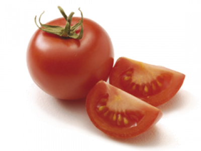

Name: Asparagus
Available: September to March, November to December
Cook: Boil, Braise, Barbecue, Roast, Microwave, Steam, Stir fry
Store: Referigerate in plastic bags with water
Nutrition: Source of folate, dietary fibre, niacin, thiamin, riboflavin, vitamin B6, C, K, potassium


Name: Cauliflower
Available: All Year
Cook: Boil, Braise, Barbecue, Roast, Microwave, Steam, Stir fry
Store: Referigerate in plastic bags
Nutrition: Source of folate, dietary fibre, vitamin B6, C, phytonutrients, potassium
Name: Fennel
Available: All year
Cook: Boil, steam, microwave, roast, grill, bake, braise, stew
Store: Referigerate in crisper and use as soon as possible
Nutrition: Source of folate, dietary fibre, vitamin C, potassium and phenolic compounds
Name: Cabbages
Available: All year
Cook: Boil, steam, microwave, stir fry, stuff
Store: Referigerate in plastic bags with water
Nutrition: Source of dietary fibre, polynutrients, phenolic compounds, vitamin A, B6, C, K, potassium
Name: Spring Onions
Available: All year
Cook: Stir fry
Store: Referigerate in plastic bags in crisper
Nutrition: Source of folate, carotenoids, phytonutrients
Name: Cauliflower
Available: All year
Cook: Boil, braise, microwave, roast, steam, stir fry
Store: Referigerate in plastic bags
Nutrition: Source of folate, dietary fibre, phytonutrients, phenolic compounds, vitamin B6, C, potassium

Name: Okra
Available: Limited supply all year
Cook: Bake, boil, microwave, steam, stew, braise
Store: Referigerate in plastic bags without washing before storing
Nutrition: Source of folate, dietary fibre, niacin, magnesium, manganese, vitamin C, polynutrients
Name: Potatoes
Available: All year
Cook: Bake, boil, braise, microwave, roast, steam, stew, stir fry, stuff
Store: In a well-ventilated, cool, dark place
Nutrition: Source of folate, dietary fibre, folate, niacin, pantothenic acid, thiamin and magnesium, vitamin C, phytonutrients, potassium
Name: Peas
Available: November to February
Cook: Boil, microwave, steam, stew, stir fry
Store: Referigerate in plastic bags
Nutrition: Source of folate, dietary fibre, niacin, thiamin, riboflavin, vitamin B6, C, A, copper, iron, magnesium, phosphorus, protein, phytonutrients, potassium

Name: Ginger
Available: All year
Cook: Stir fry, braise, stew
Store: In a dry place away from sunlight/wrap in plastic and freeze for 6 months. Fresh ginger in refrigerator for up to 2 weeks
Nutrition: Source of folate, dietary fibre, niacin, iron, riboflavin, vitamin B6, B3, C, phosphorus, zinc, potassium
Name: Celery
Available: All year
Cook: Boil (in soup), braise, steam, stew, stir fry
Store: Referigerate in plastic bags with water
Nutrition: Source of phytonutrients, vitamin K, potassium
Name: Celeriac
Available: April to November
Cook: Bake, boil, braise, microwave, roast, steam, stew, stir fry
Store: Referigerate in crisper
Nutrition: Source of dietary fibre, vitamin C, K, potassium
Name: Turnip
Available: February to August
Cook: Braise, boil, microwave, steam, stew
Store: Referigerate in plastic bags with water
Nutrition: Source of folate, dietary fibre, niacin, calcium, vitamin C, phytonutrients
Name: Spinach
Available: All year
Cook: Boil, microwave, steam, stir fry
Store: Referigerate in plastic bags
Nutrition: Source of oxalic acid, phytonutrients, vitamin A, K, iron, magnesium, potassium, phytonutrients

Name: Tomatoes
Available: All year
Cook: Boil, braise, barbecue/char grill, microwave, slow roast, stir fry
Store: At room temperature out of direct sunlight and refrigerate unless over ripe
Nutrition: Source of phytonutrients, vitamin C, A, potassium